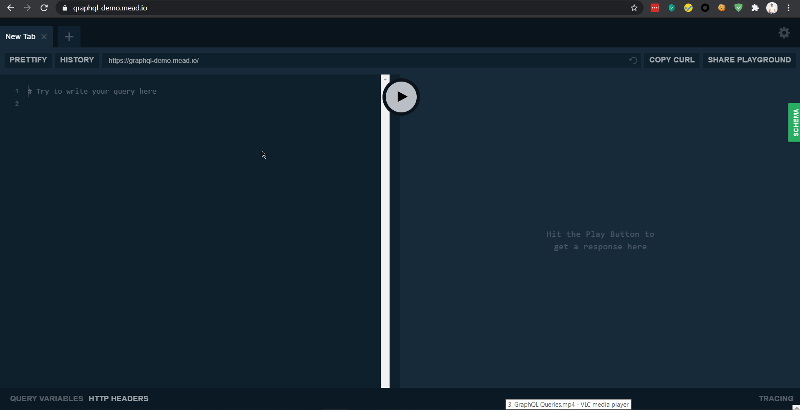

This is a graph QL playground- A little request, response tool where we can see how graphql functions and we can also install it on our own servers. At the base level this is like postman
NOTE:
- All GRAPH QL APIs are self documenting.
- Basically it knows what the response from the server will look like.
- The api exposes an operation schema which descibes all of the operations that can be performed on this API ( like query allows all the fields we are able to slelect)